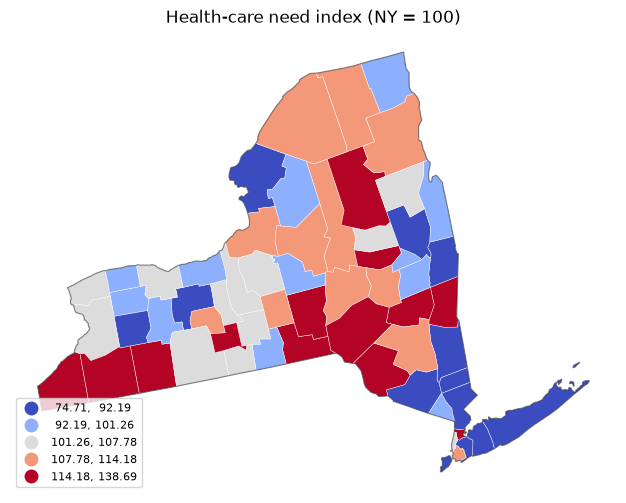
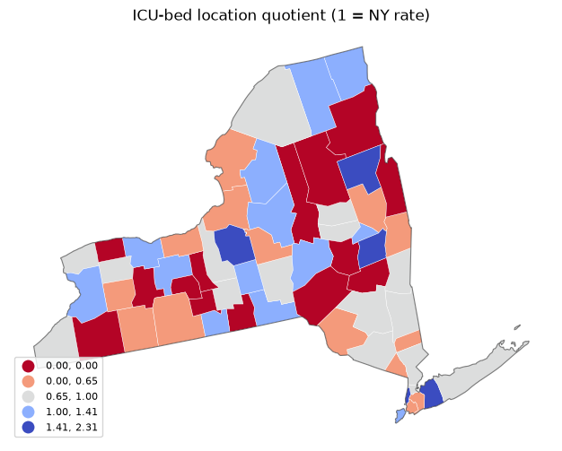
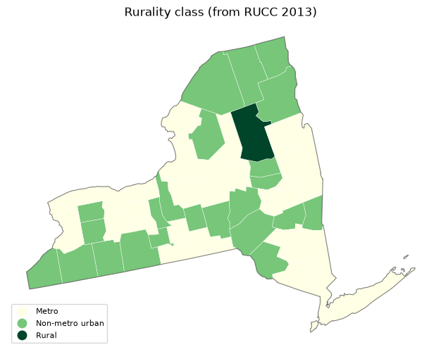
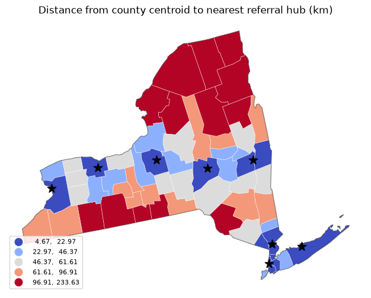
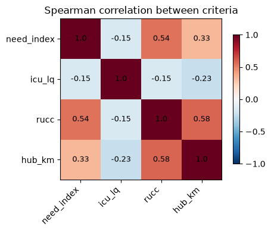

This notebook demonstrates how to systematically derive and quantify the core criteria for siting new healthcare clinics using spatial data for New York State counties. Through a series of steps, we will build indicators for health need, hospital capacity, rurality, and geographic accessibility. These derived variables will form the foundation for objective and transparent site selection analysis in later stages of the workflow.
Overview
In spatial analysis, deriving criteria refers to the process of establishing measurable variables or indicators that reflect the goals and constraints of a site selection task. Theory underlying this process emphasizes identifying factors that are relevant, quantifiable, and spatially explicit so that locations can be compared objectively. In this context, criteria such as health-need indices, healthcare capacity, rurality, and proximity to hubs are chosen to reflect real-world priorities and disparities in service access. By clearly defining and deriving these criteria, spatial analysts ensure the analysis is systematic, transparent, and can be justified using both empirical evidence and policy rationale.
Build the four clinic-siting criteria from Data/03_spatial_analysis/MCSM_data/ny_counties.gpkg: a health-need index, ICU-bed location quotient, RUCC rurality, and distance to a referral hub.
Installation. This notebook needs installation option 1 (vector, raster, CRS and visualization): pip install "geolattice[core]". See “Installation options” in the GeoLattice README.
Code
# Display matplotlib figures inline in this Jupyter notebook.%matplotlib inline# Standard library imports for path setup.import warnings # silence benign RuntimeWarnings during criterion mathfrom pathlib import Path # filesystem paths for MCSM sample data# Third-party numeric / plotting stack used throughout this notebook.import matplotlib.pyplot as plt # figure and axes creation for choroplethsimport numpy as np # array ops kept available for later criterion mathimport pandas as pd # tabular operations on county attributes# ===================================================================# Locate the repository root, load ny_counties.gpkg, and define choropleth().# ===================================================================# The installed package lives in src/; the repository root is its parent.import geolatticeROOT = Path(geolattice.__file__).resolve().parents[1]ifnot (ROOT /"Data").is_dir():raiseFileNotFoundError("Could not find the GeoLattice repository root.")DATA_DIR = ROOT /"Data"/"03_spatial_analysis"/"MCSM_data"# shared MCSM sample-data folderDATA_DIR.mkdir(parents=True, exist_ok=True) # create it if missingwarnings.filterwarnings("ignore", category=RuntimeWarning) # quiet divide-by-zero noisepd.set_option("display.width", 120) # wider DataFrame previewsplt.rcParams["figure.figsize"] = [9, 6] # default figure size for mapsimport geopandas as gpd # vector GeoDataFrames for counties, state, hubs# Load the cleaned county layer and dissolved state outline from Module 1.counties = gpd.read_file(str(DATA_DIR /"ny_counties.gpkg"), layer="counties") # county polygons + attrsstate = gpd.read_file(str(DATA_DIR /"ny_counties.gpkg"), layer="state") # dissolved NY outlinedef choropleth(gdf, column, title, cmap="coolwarm", scheme="quantiles", k=5, **kw):"""Draw a consistent county choropleth with a state outline overlay.""" ax = gdf.plot(column, cmap=cmap, scheme=scheme, k=k, legend=True, edgecolor="white", linewidth=0.3, # thin county edges legend_kwds={"loc": "lower left", "fontsize": 8}, **kw) # legend placement state.boundary.plot(ax=ax, color="#00000080", linewidth=0.8) # semi-transparent state border ax.set_title(title) # map title ax.set_axis_off() # hide axis ticksreturn ax # return axes for optional overlaysprint(len(counties), counties.crs) # feature count and CRS check
62 EPSG:5070
Driving Criteria
Raw counts are rarely good criteria. Kings County has more ICU beds than Hamilton County simply because it has about 580 times as many people. Criteria should describe a condition of a place, and that usually means one of the following:
a rate (per capita, per 10,000),
a relative index (local value ÷ reference value), or
a distance or accessibility measure.
Relative indices are especially useful in suitability analysis because the value 1 (or 100) has a clear meaning: the same as the reference area
Criterion 1: Health-care need index
The need index combines two indicators of primary-care demand: the share of residents aged 65+ and the poverty rate. Each is divided by its statewide value, the two ratios are averaged, and the result is multiplied by 100:
An index of 100 means need equal to the state average, values above 100 mean higher need, and values below 100 mean lower need.
The state reference values should be population-weighted. The share of people aged 65+ in New York is total 65+ ÷ total population, not the unweighted mean of 62 county percentages.
Code
# Compute statewide baselines for elderly share and poverty (population-weighted).state_pct65 =100* counties["pop65"].sum() / counties["pop"].sum() # NY % aged 65+state_poverty = (counties["poverty_pct"] * counties["pop"]).sum() / counties["pop"].sum() # NY poverty %print(f"NY % aged 65+ : {state_pct65:.1f}") # statewide elderly shareprint(f"NY poverty rate : {state_poverty:.1f}") # statewide poverty rate# Equal-weight composite of relative elderly share and relative poverty (NY = 100).counties["need_index"] =100*0.5* (counties["pct65"] / state_pct65 + counties["poverty_pct"] / state_poverty) # need index# Preview the five highest-need counties.counties.sort_values("need_index", ascending=False)[["county", "pct65", "poverty_pct", "need_index"]].head() # top need
NY % aged 65+ : 16.4
NY poverty rate : 13.7
county
pct65
poverty_pct
need_index
45
Bronx County
12.804336
27.3
138.694968
48
Delaware County
24.484021
15.9
132.549491
19
Hamilton County
31.258457
9.1
128.298777
13
Chautauqua County
20.090825
18.3
127.961776
11
Broome County
19.066154
17.3
121.191868
Code
# Map the health-care need index (values near 100 match the statewide average).choropleth(counties, "need_index", "Health-care need index (NY = 100)") # need choroplethplt.show() # render the figure

High need comes from two different sources. In the North Country and Catskills it is driven mostly by age, while in the Bronx, Brooklyn, and the western Southern Tier it is driven mostly by poverty. A composite index can hide this kind of difference, which is a good reason to keep the components in the table.
Criterion 2: Hospital capacity gap (ICU-bed location quotient)
A location quotient (LQ) compares a local share with a reference share:
Fewer beds than expected, so the county is under-served
> 1
More beds than expected, so the county is a regional hospital center
For this problem, a lower LQ is better, because it signals a capacity gap a clinic could help fill through prevention and earlier referral. Counties with no ICU beds have LQ = 0, which is a valid observation, not missing data.
Code
# ICU-bed location quotient: local beds/pop divided by the statewide beds/pop rate.state_icu_rate = counties["icu_beds"].sum() / counties["pop"].sum() # statewide ICU beds per personcounties["icu_lq"] = (counties["icu_beds"] / counties["pop"]) / state_icu_rate # LQ; 1 = state rateprint("Counties with zero ICU beds:", (counties["icu_beds"] ==0).sum()) # absolute zero capacityprint("Counties with LQ < 1 :", (counties["icu_lq"] <1).sum()) # below state averagecounties.sort_values("icu_lq", ascending=False)[["county", "icu_beds", "icu_lq"]].head() # highest LQ
Counties with zero ICU beds: 14
Counties with LQ < 1 : 43
county
icu_beds
icu_lq
52
New York County
761.0
2.310468
44
Albany County
120.0
1.932120
43
Warren County
24.0
1.846688
23
Nassau County
461.0
1.678217
53
Onondaga County
152.0
1.627563
Code
# Map ICU LQ with reversed coolwarm so low capacity (gap) reads as warm colours.choropleth(counties, "icu_lq", "ICU-bed location quotient (1 = NY rate)", cmap="coolwarm_r", scheme="naturalbreaks") # natural breaks on LQplt.show() # render the figure

Criterion 3: Rurality from the RUCC
The USDA Rural-Urban Continuum Code is ordinal:
RUCC
Category
1-3
Metropolitan counties, by metro size
4-7
Non-metro counties, urban population 2,500+, by size and metro adjacency
8-9
Completely rural or fewer than 2,500 urban residents
Ordinal codes can be used as a criterion directly, since higher means more rural. A simplified metro/non-metro class is also created for categorical analysis in Module 3.
Code
# Treat RUCC as an integer ordinal and derive a binary non-metro flag (RUCC >= 4).counties["rucc"] = counties["rucc"].astype(int) # ensure integer codes 1-9counties["nonmetro"] = counties["rucc"] >=4# True for non-metropolitan counties# Collapse RUCC into three rurality classes for mapping and later Boolean rules.counties["rurality_class"] = pd.cut(counties["rucc"], bins=[0, 3, 7, 9], labels=["Metro", "Non-metro urban", "Rural"]) # ordinal binscounties["rurality_class"].value_counts() # count counties per rurality class
In New York, only Hamilton County falls in the most rural class (RUCC 8-9). Most non-metro counties have small or mid-sized towns.
Code
# Map the three-class rurality typology derived from RUCC.ax = counties.plot("rurality_class", categorical=True, cmap="YlGn", legend=True, edgecolor="white", linewidth=0.3, # county edges legend_kwds={"loc": "lower left", "fontsize": 8}) # legend placementstate.boundary.plot(ax=ax, color="#00000080", linewidth=0.8) # state outlineax.set_title("Rurality class (from RUCC 2013)") # map titleax.set_axis_off() # hide axis ticksplt.show() # render the figure

Criterion 4: Proximity to a referral hub
Creating a point layer from coordinates
The clinic network partners with academic and regional referral centers. Their approximate locations (WGS84 latitude/longitude) are entered as a table and converted to points with geopandas.points_from_xy().
The coordinates are approximate and the list is illustrative. In a real project, use an authoritative facility dataset such as the CMS Provider of Services file or HIFLD hospitals.
Code
# Build an illustrative referral-hub point table (name + WGS84 lat/lon).hubs = pd.DataFrame([ ["NYU Langone (Manhattan)", 40.742, -73.974], # NYC ["Stony Brook University Hosp.", 40.910, -73.116], # Long Island ["Westchester Medical Center", 41.085, -73.805], # lower Hudson ["Albany Medical Center", 42.653, -73.776], # Capital Region ["Bassett Medical Center", 42.700, -74.925], # Otsego / Mohawk ["SUNY Upstate (Syracuse)", 43.042, -76.139], # Central NY ["Strong Memorial (Rochester)", 43.122, -77.626], # Finger Lakes ["Buffalo General", 42.900, -78.866], # Western NY], columns=["hub", "lat", "lon"]) # column names for the hub table# Convert lat/lon to a GeoDataFrame and reproject to the county CRS (EPSG:5070).hubs = gpd.GeoDataFrame(hubs, geometry=gpd.points_from_xy(hubs["lon"], hubs["lat"]), crs="EPSG:4326").to_crs(counties.crs) # match Albers metreshubs # preview hub points in projected coordinates
hub
lat
lon
geometry
0
NYU Langone (Manhattan)
40.742
-73.974
POINT (1828162.22 2182910.307)
1
Stony Brook University Hosp.
40.910
-73.116
POINT (1893534.372 2218002.55)
2
Westchester Medical Center
41.085
-73.805
POINT (1833045.041 2223540.476)
3
Albany Medical Center
42.653
-73.776
POINT (1794746.256 2394745.643)
4
Bassett Medical Center
42.700
-74.925
POINT (1702369.683 2378721.723)
5
SUNY Upstate (Syracuse)
43.042
-76.139
POINT (1597855.286 2394972.471)
6
Strong Memorial (Rochester)
43.122
-77.626
POINT (1478062.41 2379663.068)
7
Buffalo General
42.900
-78.866
POINT (1383882.926 2336623.031)
Spatial join: which county contains each hub?
A spatial join transfers attributes between layers based on their spatial relationship rather than a shared key. In this case, each point receives the attributes of the polygon that contains it (predicate="within").
This is useful for flagging hub counties and counting facilities per county.
Code
# Spatial join: attach the containing county name to each hub point.hub_in_county = gpd.sjoin(hubs, counties[["GEOID", "county", "geometry"]], how="left", predicate="within") # hub within county polygonhub_in_county[["hub", "county"]] # which county contains each hub
hub
county
0
NYU Langone (Manhattan)
New York County
1
Stony Brook University Hosp.
Suffolk County
2
Westchester Medical Center
Westchester County
3
Albany Medical Center
Albany County
4
Bassett Medical Center
Otsego County
5
SUNY Upstate (Syracuse)
Onondaga County
6
Strong Memorial (Rochester)
Monroe County
7
Buffalo General
Erie County
Code
# Count hubs per county and flag counties that host at least one hub.hub_counts = hub_in_county.groupby("GEOID").size() # hubs per GEOIDcounties["n_hubs"] = counties["GEOID"].map(hub_counts).fillna(0).astype(int) # hub count columncounties["hub_county"] = counties["n_hubs"] >0# True if county hosts a hubcounties[counties["hub_county"]][["county", "n_hubs"]] # list hub-hosting counties
county
n_hubs
22
Monroe County
1
33
Suffolk County
1
40
Otsego County
1
44
Albany County
1
49
Erie County
1
52
New York County
1
53
Onondaga County
1
60
Westchester County
1
Distance to the nearest hub with sjoin_nearest()
sjoin_nearest() finds the nearest feature in another layer and can report the distance. What you measure from matters:
Polygon → point: distance from the nearest edge of the county. A large county touching a hub city gets distance 0, even if most of its residents live far away.
Centroid → point: distance from the county’s center, which better represents a typical trip for its residents.
Both are computed so they can be compared. When two hubs are equally near, sjoin_nearest() returns duplicate rows, so drop_duplicates() keeps one row per county.
Code
# Measure proximity to the nearest referral hub two ways: edge vs centroid.# (a) Edge-based distance: nearest hub to the county polygon boundary.edge = gpd.sjoin_nearest(counties[["GEOID", "geometry"]], hubs[["hub", "geometry"]], how="left", distance_col="dist_m").drop_duplicates("GEOID") # one row/county# (b) Centroid-based distance: nearest hub to the county centroid.centroids = counties[["GEOID", "county"]].copy() # start from county ids/namescentroids = centroids.set_geometry(counties.geometry.centroid) # replace geometry with centroidscent = gpd.sjoin_nearest(centroids, hubs[["hub", "geometry"]], how="left", distance_col="dist_m").drop_duplicates("GEOID") # one row/county# Attach distances (km) and nearest-hub name back onto the counties table.counties["hub_km_edge"] = counties["GEOID"].map(edge.set_index("GEOID")["dist_m"] /1000) # edge kmcounties["hub_km"] = counties["GEOID"].map(cent.set_index("GEOID")["dist_m"] /1000) # centroid kmcounties["nearest_hub"] = counties["GEOID"].map(cent.set_index("GEOID")["hub"]) # nearest hub namecounties[["hub_km_edge", "hub_km"]].describe().round(1) # compare distance distributions
hub_km_edge
hub_km
count
62.0
62.0
mean
37.8
63.7
std
39.6
47.8
min
0.0
4.7
25%
14.1
33.2
50%
25.4
51.0
75%
54.7
92.1
max
198.6
233.6
Code
# Preview the five counties farthest from a referral hub (centroid distance).counties.sort_values("hub_km", ascending=False)[["county", "nearest_hub", "hub_km_edge", "hub_km"]].head() # farthest
county
nearest_hub
hub_km_edge
hub_km
14
Clinton County
Albany Medical Center
198.580379
233.625539
16
Franklin County
Bassett Medical Center
159.335162
217.013776
30
St. Lawrence County
SUNY Upstate (Syracuse)
141.072500
183.593628
37
Essex County
Albany Medical Center
123.834413
163.427598
20
Jefferson County
SUNY Upstate (Syracuse)
70.484066
113.781224
Edge distances are much smaller, and they are zero for every county that contains a hub. The rest of the tutorial uses centroid distance (hub_km).
Clinton County in the far north is assigned to Albany, more than 200 km away, even though the University of Vermont Medical Center in Burlington is much closer across Lake Champlain. Facilities outside the study area are invisible to the analysis. This is an edge effect, and it is explored in Exercise 4.
Code
# Map centroid-to-hub distance and overlay hub locations as black stars.ax = choropleth(counties, "hub_km", "Distance from county centroid to nearest referral hub (km)", cmap="coolwarm", scheme="quantiles") # distance choroplethhubs.plot(ax=ax, marker="*", color="black", markersize=120) # hub markersplt.show() # render the figure

Checking criteria for redundancy
If two criteria are strongly correlated, they measure much the same thing, and including both effectively double-weights it. A Spearman rank correlation is robust to the skewed distributions seen here.
Code
# Spearman rank correlation among the four derived criteria (checks redundancy).criteria = ["need_index", "icu_lq", "rucc", "hub_km"] # criterion column namescorr = counties[criteria].corr(method="spearman").round(2) # rank correlation matrixcorr # display the correlation table
need_index
icu_lq
rucc
hub_km
need_index
1.00
-0.15
0.54
0.33
icu_lq
-0.15
1.00
-0.15
-0.23
rucc
0.54
-0.15
1.00
0.58
hub_km
0.33
-0.23
0.58
1.00
Code
# Heatmap of the Spearman correlation matrix between criteria.fig, ax = plt.subplots(figsize=(5, 4)) # compact square figureim = ax.imshow(corr, cmap="RdBu_r", vmin=-1, vmax=1) # diverging colormap centred at 0ax.set_xticks(range(len(criteria)), criteria, rotation=45, ha="right") # x tick labelsax.set_yticks(range(len(criteria)), criteria) # y tick labels# Annotate each cell with its correlation coefficient.for i inrange(len(criteria)):for j inrange(len(criteria)): ax.text(j, i, corr.iloc[i, j], ha="center", va="center", fontsize=9) # cell labelfig.colorbar(im, ax=ax, shrink=0.8) # colourbar for correlation scaleax.set_title("Spearman correlation between criteria") # panel titleplt.tight_layout() # tighten spacingplt.show() # render the figure

Rurality is moderately correlated with need (older, poorer populations) and with distance to a hub. The ICU-bed LQ is only weakly related to the other criteria. None of the correlations is close to ±1, so the four criteria capture different aspects of suitability. As a common rule of thumb, |ρ| > 0.8 is a reason to drop or merge one of the criteria.
Save the criteria layer
Code
# Persist the derived criteria (plus hubs and state outline) for later notebooks.keep = ["GEOID", "county", "pop", "pct65", "poverty_pct", "icu_beds", "rucc","need_index", "icu_lq", "nonmetro", "rurality_class", "n_hubs", "hub_county","nearest_hub", "hub_km", "geometry"] # columns to retain in the criteria layerout =str(DATA_DIR /"ny_criteria.gpkg") # shared GeoPackage path for Modules 3+crit = counties[keep].copy() # subset to the analysis columnscrit["rurality_class"] = crit["rurality_class"].astype(str) # categories -> strings for GPKGcrit.to_file(out, layer="counties", driver="GPKG") # write criteria countiesstate.to_file(out, layer="state", driver="GPKG") # write state outlinehubs.to_file(out, layer="hubs", driver="GPKG") # write referral hubsprint("Saved:", out) # confirm output pathcrit.drop(columns="geometry").describe().round(2) # numeric summary of saved attributes
Rebuild the need index with three components by adding the unemployment rate (Unemployment_rate_2018 in the raw table). How much does the ranking change?
Weight the need index components 70/30 (age/poverty). Which counties gain the most?
Replace centroid distance with distance from a population-weighted centroid. Why might this be better for counties with one large city near their edge?
Add a ninth hub, for example Guthrie Robert Packer Hospital in Sayre, PA (about 41.98, -76.52). Which NY counties change nearest hub? What does this say about edge effects at a study-area boundary?
Key takeaways
Express criteria as rates, relative indices, or distances, not raw counts.
A location quotient (local share ÷ reference share) gives a natural threshold at 1.
Spatial joins link layers by location. Use sjoin() for containment or intersection and sjoin_nearest() for proximity.
The geometry you measure from (edge or centroid) can change distances dramatically.
Check criteria correlations to avoid double-counting.